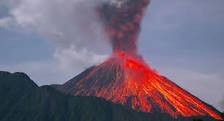
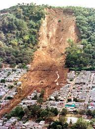
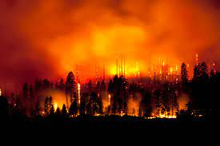

volcanic

A volcano is a rupture in the crust of a planetary-mass object, such as Earth, that allows hot lava, volcanic ash, and gases to escape from a magma chamber
landslides

Landslides, also known as landslips, are several forms of mass wasting that may include a wide range of ground movements, such as rockfalls
wildfire

A wildfire, forest fire, bushfire, wildland fire or rural fire is an unplanned, uncontrolled and unpredictable fire in an area of combustible vegetation